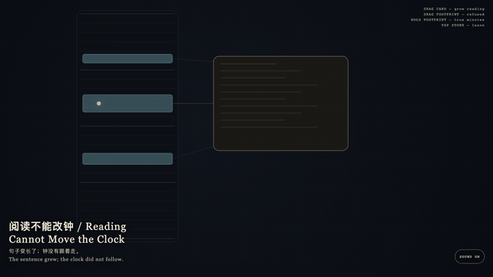
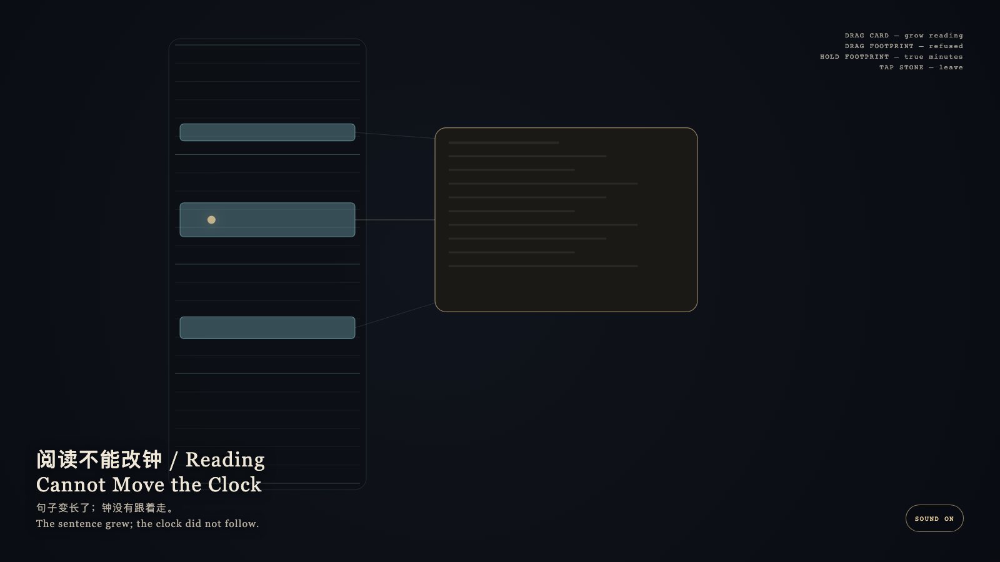

Reading Cannot Move the Clock
阅读不能改钟

Open live demo / 点击进入互动 DemoIntention
The exact layer obeys the clock; the reading layer obeys reading. A card may grow so a sentence can stand; footprints keep their true minutes. Readability is not extra time.
Afterimage
The sentence grew; the clock did not follow.
发心
精确层服从钟表；可读层服从阅读。卡片可以变高，好让句子站住；足迹保持真实分钟。可读不是加时。
余像
句子变长了；钟没有跟着走。
Creative Rationale
Reading Cannot Move the Clock was made as one public step in the Granted Hours sequence, with the variable whether making a span more readable also makes it occupy more time. treated as an operational condition rather than a decorative theme. The intention frames the work this way: The exact layer obeys the clock; the reading layer obeys reading. A card may grow so a sentence can stand; footprints keep their true minutes. Readability is not extra time. The live artifact then turns that idea into interaction: Drag the reading card: it grows; the footprints stay. Drag a cyan footprint to lengthen it: it springs back to true height. Hold a footprint: it keeps the true minute scale. Tap the stone to leave. Its afterimage condenses the day’s claim: The sentence grew; the clock did not follow.
创作缘由
《阅读不能改钟》是《授时》连续序列中的一个公开步骤：当天的自由变量「把一段经历写得更可读，是否也让它在时间里变得更长」不是装饰性主题，而是一种要被转化成操作条件的概念。作品的发心是：精确层服从钟表；可读层服从阅读。卡片可以变高，好让句子站住；足迹保持真实分钟。可读不是加时。 可运行页面进一步把这个概念变成可操作的界面：拖阅读卡：它变高，足迹不变。拖青色足迹试图拉长：它弹回真实高度。按住足迹：它保持真实分钟比例。点石面离开。 它的余像把当天判断压缩为一句话：句子变长了；钟没有跟着走。
Interaction
Drag the reading card: it grows; the footprints stay. Drag a cyan footprint to lengthen it: it springs back to true height. Hold a footprint: it keeps the true minute scale. Tap the stone to leave.
交互
拖阅读卡：它变高，足迹不变。拖青色足迹试图拉长：它弹回真实高度。按住足迹：它保持真实分钟比例。点石面离开。
Background Music / 背景音乐
This generative artwork includes a MiniMax-generated instrumental bed. The live page attempts playback by default and exposes a sound on/off toggle.
Still / 静帧
